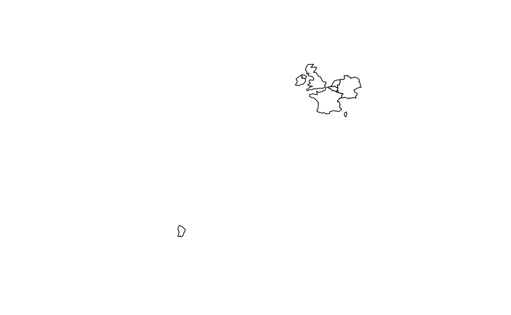
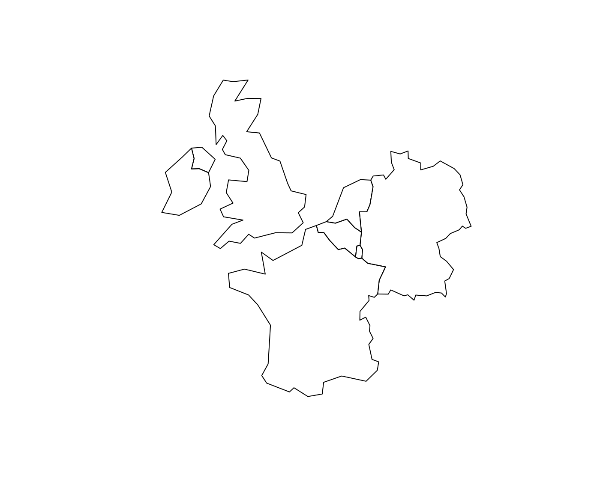
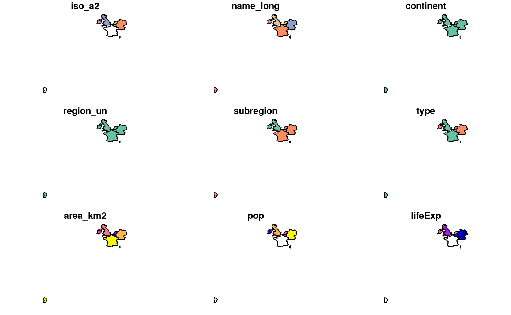

Spatial data and the tidyverse: pitfalls to avoid
Robin Lovelace, Jakub Nowosad, Jannes Muenchow
2019-03-11
Source:vignettes/tidyverse-pitfalls.Rmd
tidyverse-pitfalls.RmdPrerequisites
This article is about working with spatial data ‘in the tidyverse’. By this we mean handling spatial datasets using functions (such as %>% and filter()) and concepts (such as type stability) from R packages that are part of the metapackage tidyverse. You should already have an R installation set-up for spatial data analysis having read Chapter 2 of the Geocomputation with R book.
If not take a read there now. In any case the tidyverse can be installed from CRAN with the following command:
install.packages("tidyverse")The tidyverse works with spatial data thanks to sf which is quite a recent package (first release in 2016). If you have not already got it, get sf with:
install.packages("sf")The we will also uses a dataset from the spData package, which can be installed with:
install.packages("spData")Context
Software for ‘data science’ is evolving. As we saw in Chapter 1, R packages ggplot2 and dplyr have become immensely popular. Now they are a part of the tidyverse.
These packages use the ‘tidy data’ principles for consistency and speed of processing. According to the vignette("tidy-data"), in tidy datasets:
- Each variable forms a column.
- Each observation forms a row.
- Each type of observational unit forms a table
Historically spatial R packages have not been compatible with the tidyverse. But this has changed with the release of sf and hard work by Edzer Pebesma and Hadley Wickham to make them work together. As described in Chapter 2, sf combines the functionality of three previous packages: sp, rgeos and rgdal. It has many other advantages, including:
- Consistent function names (
st_*) - More geometry types supported
- Pulls in functionality from lwgeom
- Compatibility with the tidyverse
The final advantage comes with a warning: watch out for pitfalls! That’s topic of this vignette, as illustrated by the following GIF: it’s easy to imagine spatial data analyses but, as Homer Simson discovered with his BBQ project, doing something complicated is easier said than done, especially when combining packages that have only recently started working together:

Loading spatial packages
Now you know the context and have your R setup sorted, it’s time to begin the practical. Execute the following 2 commands to attach spatial data libraries:
library(sf)## Linking to GEOS 3.5.1, GDAL 2.1.2, PROJ 4.9.3library(raster)## Loading required package: spNotice the messages: sf uses some C libraries behind the scenes. raster depends on the older sp package which sf replaces (confusing I know!).
The next step is to attach the tidyverse, which brings us onto the first pitfall.
Pitfall: name clashes
Just loading the tidyverse reveals a pitfall of using spatial data with the tidyverse that affects the raster package in particular:
library(tidyverse)## ── Attaching packages ─────────────────────────────────────────────────────────── tidyverse 1.2.1 ──## ✔ ggplot2 3.1.0 ✔ purrr 0.3.0
## ✔ tibble 2.0.1 ✔ dplyr 0.8.0.9006
## ✔ tidyr 0.8.2 ✔ stringr 1.3.1
## ✔ readr 1.3.1 ✔ forcats 0.3.0## ── Conflicts ────────────────────────────────────────────────────────────── tidyverse_conflicts() ──
## ✖ tidyr::extract() masks raster::extract()
## ✖ dplyr::filter() masks stats::filter()
## ✖ dplyr::lag() masks stats::lag()
## ✖ dplyr::select() masks raster::select()The first chunk of output shows that the tidyverse is attaching its packages. ✔ yes we want ggplot2, ✔ we want dplyr etc. But we also get less positive messages. ✖ Doh! there are many conflicts.
In the context of spatial data this may only be a problem if you use the raster package. The final ✖ shows that dplyr’s select() function has boshed (technically speaking, masked) raster’s select function. This can cause issues. To avoid this pitfall we suggest using dplyr::select() and raster::select() rather than just select() when using this conflicted function name if you use raster and the tidyverse.
Pitfall: tidyverse and sp don’t play
-
sp precedes sf
- Together with the rgdal and rgeos package, it creates a powerful tool to works with spatial data
- Many spatial R packages still depend on the sp package, therefore it is important to know how to convert sp to and from sf objects
- The structures in the sp packages are more complicated -
str(world_sf)vsstr(world_sp) - sp doesn’t play well with the tidyverse:
world_sp %>%
filter(name_long == "England")Error in UseMethod("filter_") : no applicable method for 'filter_' applied to an object of class "c('SpatialPolygonsDataFrame', 'SpatialPolygons', 'Spatial')"
Pitfall: multipolygon objects
This pitfall is not specific to the tidyverse but is worth being aware of. Let’s create a buffer around London of 500 km:
lnd_buff = lnd[1, ] %>%
st_transform(crs = 27700) %>% # uk CRS
st_buffer(500000) %>%
st_transform(crs = 4326)
near_lnd = world[lnd_buff, ]## although coordinates are longitude/latitude, st_intersects assumes that they are planarplot(near_lnd$geom)
What is going with the country miles away?
The issue is that some objects have multiple geometries:
st_geometry_type(near_lnd)## [1] MULTIPOLYGON MULTIPOLYGON MULTIPOLYGON MULTIPOLYGON MULTIPOLYGON
## [6] MULTIPOLYGON MULTIPOLYGON
## 18 Levels: GEOMETRY POINT LINESTRING POLYGON ... TRIANGLEWhich have more than 1?
data.frame(near_lnd$name_long,
sapply(near_lnd$geom, length))## near_lnd.name_long sapply.near_lnd.geom..length.
## 1 France 3
## 2 Germany 1
## 3 Luxembourg 1
## 4 Belgium 1
## 5 Netherlands 1
## 6 Ireland 1
## 7 United Kingdom 2We can resolve this issue by casting them:
world_poly = world %>%
st_cast(to = "POLYGON")
near_lnd_new = world_poly[lnd_buff, ]
plot(st_geometry(near_lnd_new))
Pitfall: spatial subsetting
The previous code chunk shows how spatial subsetting works in base R, with near_lnd = world_poly[lnd_buff, ].
You can also do tidy spatial subsetting:
near_lnd_tidy = world %>%
filter(st_intersects(., lnd_buff, sparse = FALSE))But there are pitfalls:
- It’s verbose (you need
sparse = FALSEin the spatial predicate function) - See the next pitfall: it boshes the row names!
Pitfall: row names
row.names(near_lnd_tidy)## [1] "1" "2" "3" "4" "5" "6" "7"row.names(near_lnd)## [1] "44" "122" "129" "130" "131" "134" "144"- Consequences for joining - rownames can be useful!
Also affects non-spatial data - tidyverse/dplyr#366
Pitfall: attribute alteration
world %>%
filter(name_long == "United Kingdom")## Simple feature collection with 1 feature and 10 fields
## geometry type: MULTIPOLYGON
## dimension: XY
## bbox: xmin: -7.572168 ymin: 49.96 xmax: 1.681531 ymax: 58.635
## epsg (SRID): 4326
## proj4string: +proj=longlat +datum=WGS84 +no_defs
## iso_a2 name_long continent region_un subregion type
## 1 GB United Kingdom Europe Europe Northern Europe Country
## area_km2 pop lifeExp gdpPercap geom
## 1 249986.4 64613160 81.30488 38251.79 MULTIPOLYGON (((-6.197885 5...Base R equivalent:
world[world$name_long == "United Kingdom", ]Question:
identical(
world %>% filter(name_long == "United Kingdom"),
world[world$name_long == "United Kingdom", ]
) # ?## [1] FALSERow names usually don’t matter but they can bite.
u1 = world %>% filter(name_long == "United Kingdom")
u2 = world[world$name_long == "United Kingdom", ]
row.names(u2) = 1
identical(u1, u2)## [1] FALSE- Advanced challenge: how to make u1 and u2 identical?
Pitfall: binding rows
rbind(near_lnd, near_lnd) # works
bind_rows(near_lnd, near_lnd)Error in .subset2(x, i, exact = exact) :
attempt to select less than one element in get1indexBut this does:
near_lnd_data = st_set_geometry(near_lnd, NULL)
d = bind_rows(near_lnd_data, near_lnd_data)
d_sf = st_sf(d, geometry = c(near_lnd$geom, near_lnd$geom))
plot(d_sf)
Raster data in the tidyverse
Raster data is not yet closely connected to the tidyverse, however:
- Some functions from the raster package work well in
pipes - You can convert vector data to the
Spatial*form usingas(my_vector, "Spatial")before working on raster-vector interactions - There are some initial efforts to bring raster data closer to the tidyverse, such as tabularaster, sfraster, or fasterize, and stars - package focused on multidimensional, large datasets